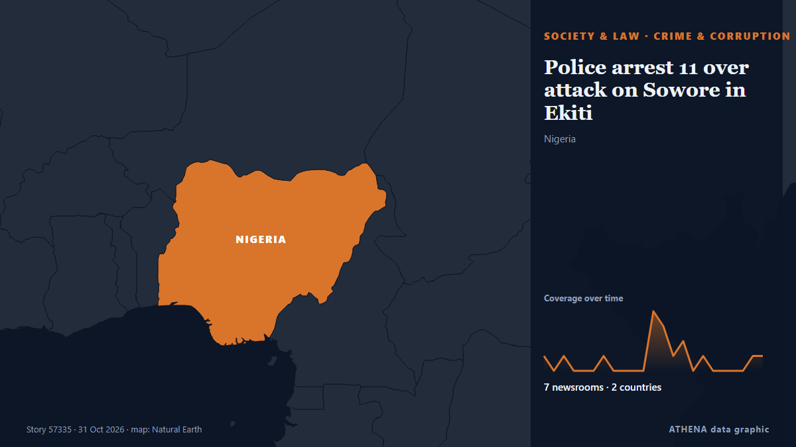

Εγκλήματα & διαφθορά
| 18 Οκτ | 0 |
|---|---|
| 19 Οκτ | 0 |
| 20 Οκτ | 0 |
| 21 Οκτ | 0 |
| 22 Οκτ | 2 |
| 23 Οκτ | 1 |
| 24 Οκτ | 2 |
| 25 Οκτ | 1 |
| 26 Οκτ | 4 |
| 27 Οκτ | 3 |
| 28 Οκτ | 2 |
| 29 Οκτ | 4 |
| 30 Οκτ | 5 |
| 31 Οκτ | 0 |
Οι τίτλοι των ειδήσεων παρουσιάζονται στα αγγλικά, όπως δημοσιεύτηκαν.

Police arrest 11 over attack on Sowore in Ekiti
The police had dismissed reports that Sowore was kidnapped by armed men in the state capital, describing the incident as an altercation with some individuals at a restaurant around the Dalimore area… από Vanguard
New York state police to take over sexual assault complaints at Cornell University
New York state police will take over future sexual assault investigations at Cornell University, Governor Kathy Hochul said… από BusinessWorld
This mayor crusaded against cartels in Mexico. Now his assassination haunts his city
Mayor Grecia Quiroz navigates the streets of Uruapan with heavy security, nearly a year after her partner, Carlos Manzo, was assassinated. από ABC News (International)
U.K. police share update on probe into claims against Meghan Markle’s father
The Metropolitan Police acknowledged receiving a letter in 2019 regarding accusations about Meghan Markle’s father but did not share this information with other law agencies. από Arab News
Police investigating ‘report of assault’ as video is posted of Enoch Burke confronting Archbishop of Armagh after funeral
Police confirm they are investigating assault of a member of the clergy on Thursday at St Patrick’s Cathedral in Armagh. από The Irish News (Belfast)
French presidential hopeful Édouard Philippe quizzed in embezzlement case
French investigators on Thursday questioned former prime minister Édouard Philippe, a candidate in next year's presidential election, in a case of alleged embezzlement of public funds. από France 24 English
Ex-FBI officials charged with lying to Congress about Hunter Biden probe
Two former FBI officials are facing charges for lying to Congress about their involvement in the agency’s investigation into Hunter Biden’s laptop. από The Hill
Costa Rica Fires Minister Over Pacific Pact
President Laura Fernández dismissed Trade Minister Indiana Trejos and shelved the 12-nation Trans-Pacific pact Costa Rica planned to sign in November. από The Rio Times
Man charged with fraud over Bondi Beach shooting claim
Detectives identified a 46-year-old man suspected of falsely claiming he was injured in the Bondi shooting and subsequently making fraudulent compensation claims. από Free Malaysia Today
China adopts measures to tighten discipline in Communist Party
The fifth plenum of the Central Committee, led by President Xi Jinping, adopted a decision on "advancing full and rigorous governance of the party", which includes reducing corruption among cadres… από CNA (Channel NewsAsia)
Iran dismantles 4 terrorist cells, arrests 16
Iran claimed that some of the 16 people it had arrested had entered Iran from abroad. από Al-Monitor
Woman shot dead at home in Adelaide
A woman has been shot dead by police at a home in Firle in Adelaide's eastern suburbs. από Sydney Morning Herald
Karnataka man booked in several murder cases beaten to death; 2 brothers held
[GroundUp] 50 people murdered the man in broad daylight on Thursday morning. από AllAfrica
Judiciary chief meets with Leader
TEHRAN, Oct. 24 (MNA) – Iran's Judiciary Chief Gholam-Hossein Mohseni-Ejei has met with Leader of the Islamic Revolution Ayatollah Seyyed Mojtaba Hosseini Khamenei. από Mehr News (English)
Woman ‘loses over €1,200’ in online fine scam
A 45-year-old woman has reported losing €1,219 after falling victim to an online scam, the police said on Wednesday, while also warning people to be wary of possible further scam operations. από Cyprus Mail
Man, 39, charged with murder of man in Mallow
A 39-year old man has been charged with the murder of Paul O'Connor in Mallow almost a fortnight ago. από RTÉ News
Man arrested in connection with suspicious fire in Napier
Police say a man has been arrested in connection with one of three suspicious fires which happened in central Napier on Monday morning. από RNZ National
Ex-wife of Zimbabwe’s vice-president freed after collapse of attempted murder case
Marry Mubaiwa had been held on remand for seven years after being charged in 2019 for her then husband's attempted murder. από BBC News